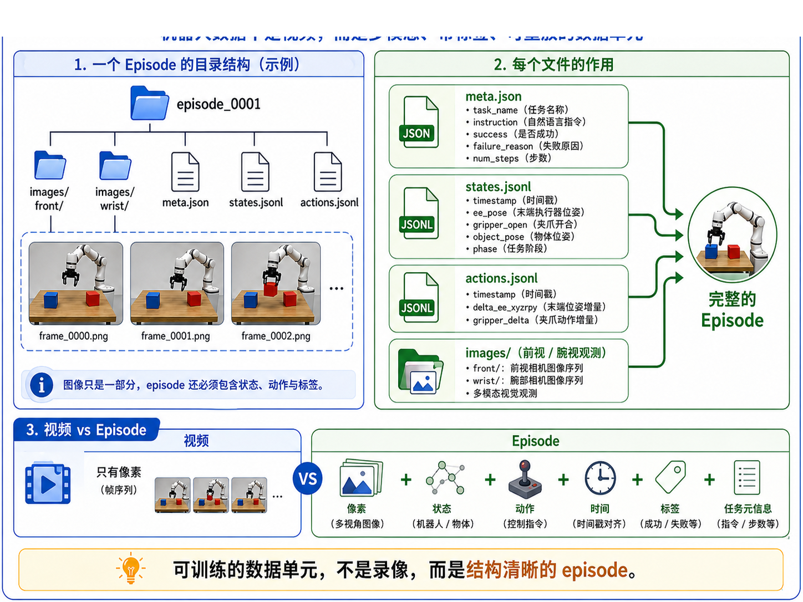
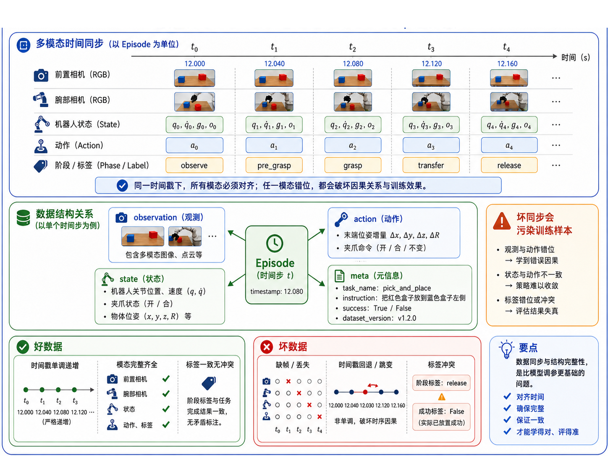

第 7 章：机器人数据格式：一条 Episode 到底长什么样
前一章，我们终于把主线任务 pick_box_to_bin 正式定义了出来。也就是说，我们已经知道：
- 机器人要做什么；
- 在什么工作空间里做；
- 动作空间是什么；
- 什么算成功；
- 什么算失败；
- 哪些因素会被随机化。
但是，一个正式定义好的任务，仍然还不能直接拿去训练。因为策略训练最终吃的不是“任务说明文档”，而是数据。
于是，问题自然推进到了这一章：
机器人学习里，一条 Episode 到底长什么样？
很多初学者会下意识地把机器人数据理解成“视频”。这是一个很常见、但也很危险的误解。视频当然重要，但它只是 observation 的一部分。真正能被训练系统消费的 episode，还必须包含：
- 图像；
- 状态；
- 动作；
- 时间戳；
- 任务元信息；
- success / failure 标签；
- 有时还包括 failure_reason、dataset_version 等。
所以本章要做的，就是把“机器人数据不是视频”这件事彻底讲清楚，并让主线项目第一次拥有真正像样的数据目录结构。
1. 本章要解决的问题
本章重点解决以下九个问题：
- 为什么机器人数据不能被简化成一段视频？
- 一条 episode 最少应该包含哪些文件？
meta.json应该记录什么？states.jsonl与actions.jsonl为什么要分开？- 图像应该如何保存？文件夹应如何组织？
- 为什么 observation、state、action、timestamp 必须同步？
- success / failure / failure_reason 为什么属于 episode 的一部分？
- 一条成功 episode 与一条失败 episode 在数据层面应该如何体现？
- 如何用脚本生成并可视化一个标准 episode 样例？
2. 为什么这个问题重要
2.1 模型学到的不是“录像”，而是带因果结构的样本
对于机器人策略来说，一条训练样本并不是“这一帧画面长什么样”，而是：
- 在时刻
t，机器人观察到了什么； - 自己处于什么状态；
- 任务是什么；
- 然后应该执行什么动作；
- 这个时刻对应哪个 phase；
- 整条 episode 最终是成功还是失败。
如果只有视频而没有动作，那你不知道专家到底做了什么； 如果只有动作而没有状态，那你不知道动作是基于什么条件做出的； 如果没有时间戳，模态之间的因果对应关系就会被破坏。
2.2 数据结构比“有没有很多数据”更基础
很多人一开始会问：“我要多少条数据？”
这是一个重要问题，但在它之前还有一个更底层的问题：
你的每一条数据到底是不是结构完整的训练单元？
如果数据结构都没理清，后面再多数据也只是放大混乱。
2.3 自动驾驶经验在这里依然很有帮助
如果你做过自动驾驶数据闭环，会很熟悉这种感觉：
- log 不是单视频，而是多传感器同步；
- 每个时间步都有状态与时间戳；
- 标注、事件、任务上下文都很重要；
- 质量问题常常出在时间同步与字段错位，而不是出在模型本身。
机器人 episode 与自动驾驶 log 在思想上非常接近，只是对象和控制形式不同。
3. 核心概念
3.1 什么是 Episode
在本书中，一个 episode 指的是：
从任务开始，到任务结束或中止为止的一段完整、多模态、带标签的时序数据单元。
它至少应该能回答：
- 任务是什么；
- 一共有多少步；
- 每一步看到了什么；
- 每一步机器人处于什么状态；
- 每一步执行了什么动作；
- 最终成功了吗；
- 如果失败了，原因是什么。
3.2 为什么“机器人数据不是视频”
视频只是图像帧序列。它能提供视觉观测，但不能完整表达：
- 机器人关节 / 末端状态；
- 夹爪是否闭合；
- 动作命令是什么；
- 当前阶段是 pre_grasp 还是 transfer；
- 该条样本最终是否成功。
所以，机器人数据单元更准确的理解应该是：
Episode = 图像 + 状态 + 动作 + 时间 + 标签 + 任务元信息
3.3 episode 目录结构
本书建议将一条 episode 设计为目录形式，例如：
episode_0001/
images/
front/
frame_0000.png
frame_0001.png
...
wrist/
frame_0000.png
frame_0001.png
...
meta.json
states.jsonl
actions.jsonl
这种设计有几个好处：
- 图像和结构化数据清晰分离；
- 多视角图像容易扩展；
- states / actions 的解析更简单；
- 与后续数据质检、转换脚本兼容性更好。
3.4 meta.json 的作用
meta.json 不是“可有可无的补充文件”，它是整条 episode 的总说明。至少建议记录：
episode_idtask_nameinstructionsuccessfailure_reasonnum_stepscontrol_modeobservation_modalitiesdataset_versionnotes
换句话说，meta.json 更像 episode 的“封面信息”。
3.5 states.jsonl 与 actions.jsonl
为什么不把状态和动作都塞进一个大 JSON 里？
因为从工程上说，分开存储更清晰：
states.jsonl表示每个时刻世界与机器人“是什么样”；actions.jsonl表示每个时刻策略 / 专家“做了什么”；meta.json表示整条数据“属于什么任务、最终结果如何”。
这种拆分让后续做：
- 可视化；
- 统计；
- 校验；
- 模型数据加载；
- 失败分析；
都更加方便。
3.6 时间同步为什么关键
时间同步的核心不是“看起来整齐”，而是维护因果关系。
在时刻 t：
- front camera 图像；
- wrist camera 图像；
- robot state；
- action；
- phase label；
都必须尽可能对应同一个时间点。如果其中一项错位，就可能出现：
- 图像还是接近物体阶段，但 action 已经是 release；
- 状态显示夹爪已闭合，但动作还是 open；
- 标签写的是 success，但真实上物体还没进收纳盒。
这种错位会直接污染训练样本。
3.7 成功 episode 与失败 episode
很多初学者只愿意保存成功 episode，觉得失败没价值。其实这是一个很大的损失。
失败 episode 至少有两大价值：
- 帮你诊断系统问题；
- 帮你更准确地构造 success / failure 分布。
因此，本章升级后的数据生成脚本会同时生成：
episode_0001：成功样本；episode_0002：失败样本（drop_during_transfer）。
这会让你更清楚地看到 failure_reason 在数据结构中的位置。
4. 概念图 / 流程图 / 架构图
4.1 图 7-1 一条 Episode 的目录结构

这张图直观地说明：episode 不是单一视频文件，而是一个小型数据包，包含图像目录和结构化文件。
4.2 图 7-2 Episode 的时间同步与数据关系

这张图非常关键，因为它解释了为什么 observation、state、action 与 timestamp 必须对齐。它也是后面“数据质检”章节的重要铺垫。
4.3 Mermaid 图：episode 目录结构
flowchart TD
A[episode_0001] --> B[images/front]
A --> C[images/wrist]
A --> D[meta.json]
A --> E[states.jsonl]
A --> F[actions.jsonl]
4.4 Mermaid 图：单时间步样本关系
flowchart LR
A[front_rgb_t]
B[wrist_rgb_t]
C[state_t]
D[action_t]
E[phase_t]
F[meta]
A --> X[训练样本]
B --> X
C --> X
D --> X
E --> X
F --> X
5. 工程化理解
5.1 为什么使用 JSONL
本书建议用 JSONL 存 states / actions，而不是一个超长 JSON 数组。原因是：
- 逐行读取更方便；
- 更适合流式处理；
- 更便于调试与 diff；
- 与很多日志系统习惯一致。
5.2 为什么图像按帧保存
在学习阶段，把图像序列保存成独立帧文件而不是压成视频，有几个好处：
- 调试简单；
- 更容易检查缺帧；
- 更容易与 timestamp 对应；
- 后续做数据质检和示例展示更方便。
当然，真实大规模系统中也可以使用更高效的打包格式，但本书当前阶段优先强调“结构清晰与可理解”。
5.3 为什么失败原因值得写进 meta.json
失败不是一个布尔值就能解释完的。至少在工程诊断中，我们通常还想知道：
- 是 drop_during_transfer？
- 是 timeout？
- 是 out_of_workspace？
- 还是 self_collision？
因此，本章建议把 failure_reason 也写入元信息中，这对后面数据质检和评测分析都很重要。
6. 主线项目中的位置
本章对主线项目的推进非常关键。新增 / 升级内容包括：
robot-learning-shelf-demo/
datasets/
dataset_v0_sample/
episode_0001/
episode_0002/
scripts/
01_generate_synthetic_episode.py
02_visualize_episode.py
也就是说，主线项目现在第一次具备：
- 标准 episode 目录结构；
- 前视 / 腕视图像序列；
- states / actions / meta 三类结构化数据；
- 成功与失败样本；
- episode 完整性检查与可视化能力。
7. 示例
7.1 示例 1：meta.json
一个典型的 meta.json 可能包含：
{
"episode_id": "episode_0001",
"task_name": "pick_box_to_bin",
"instruction": "把红色盒子放进右边收纳盒。",
"success": true,
"failure_reason": null,
"num_steps": 7,
"dataset_version": "v0.2"
}
7.2 示例 2：states.jsonl
每一行对应一个时间步，记录：
timestampee_pose_xyzrpygripper_openobject_pose_xyzbin_pose_xyzphase
例如 phase 可以依次是：
reset -> observe -> pre_grasp -> approach -> grasp -> transfer -> release
7.3 示例 3：actions.jsonl
每一行记录该时间步的动作：
delta_ee_xyzrpygripper_deltacomment
这使得你在看数据时，能够同时知道：
- 当时机器人看到了什么；
- 它处于什么状态；
- 它执行了什么动作；
- 以及动作背后的语义意图。
7.4 示例 4：成功与失败对比
episode_0001：成功样本。物体被抓起，转移到收纳盒，并最终释放成功。
episode_0002：失败样本。物体在 transfer 阶段发生掉落，success=false，并记录 failure_reason=drop_during_transfer。
这类失败样本在后续数据质检和评测分析中非常有价值。
8. 练习代码
8.1 生成 synthetic episode
脚本：scripts/01_generate_synthetic_episode.py
推荐运行：
cd robot-learning-shelf-demo
python scripts/01_generate_synthetic_episode.py
该脚本会生成两个 episode：
episode_0001（成功）episode_0002（失败）
并自动创建：
images/front/*.pngimages/wrist/*.pngmeta.jsonstates.jsonlactions.jsonl
8.2 可视化与完整性检查
脚本：scripts/02_visualize_episode.py
推荐运行：
python scripts/02_visualize_episode.py \
--episode_dir datasets/dataset_v0_sample/episode_0001 \
--save_plot reports/ch07_episode_0001_action_timeline.png \
--save_summary reports/ch07_episode_0001_summary.md
它会做三件事：
- 打印 episode 摘要；
- 检查图像数量、时间戳和步数是否一致；
- 生成 action 时间曲线与 Markdown 摘要。
9. 代码解释
9.1 01_generate_synthetic_episode.py
升级后的脚本有两个核心改动：
第一，增加了图像帧生成。也就是说，episode 不再只有结构化 JSON / JSONL，而是真正带有 front / wrist 观测。
第二，增加了失败样本生成。这样读者就不再只看到“完美数据”，而是能更直观地理解 failure_reason 的作用。
9.2 02_visualize_episode.py
这个脚本主要帮助读者完成三件事：
- 读取一条 episode；
- 生成人类可读的摘要；
- 执行最小完整性检查。
它体现了一个很重要的工程原则：
数据格式一旦设计出来，就要尽快配套“看数据”和“查数据”的工具。
否则你会陷入“虽然有数据，但不知道数据到底是不是好的”的状态。
9.3 为什么完整性检查是必要的
本章虽然还没有正式进入“数据质检”，但已经先做了最小版检查，例如：
- states 数量是否等于 num_steps；
- actions 数量是否等于 num_steps；
- front / wrist 图像数量是否匹配；
- timestamps 是否单调；
- state timestamps 与 action timestamps 是否一致。
这些检查会直接成为下一章数据质检工作的前置基础。
10. 常见错误
错误 1：把视频当成全部数据
视频只是 observation 的一部分，不是完整训练样本。
错误 2：不保存动作或状态
没有动作，模仿学习无法训练；没有状态，动作的上下文会丢失。
错误 3：时间戳不对齐
时间错位会破坏 observation → action 的因果对应，属于非常隐蔽但严重的问题。
错误 4：只保留成功样本
失败样本对诊断和分布理解同样重要，不能被简单丢弃。
错误 5：没有元信息字段
如果没有 task_name、instruction、success、dataset_version 等元信息，后面数据管理会迅速失控。
11. 本章练习
练习 1：基础练习
请用自己的语言解释：为什么“机器人数据不是视频”？
练习 2：工程练习
在 states.jsonl 中增加一个字段 gripper_width_mm，并同步修改生成脚本。
练习 3：工程练习
在 meta.json 中增加 session_id 字段，并说明它对数据管理的作用。
练习 4：进阶练习
给 02_visualize_episode.py 增加一个检查：如果 success=true 但 failure_reason 非空，则报告冲突。
练习 5：思考练习
如果 action 存的是绝对位姿，而不是相对增量，会对：
- 数据分布；
- 模型学习难度；
- 跨场景泛化；
- rollout 稳定性；
分别带来什么影响？
12. 本章产出
本章应当产出：
- 标准 episode 目录结构；
- 两条示例 episode（成功 + 失败）；
- 支持生成 RGB 图像的 synthetic data 脚本；
- 一个可视化与完整性检查脚本；
- 对“多模态 + 时间同步 + 结构化标签”这一机器人数据观的稳定理解。
13. 小结
这一章最重要的结论是：
机器人学习的数据单元，不是录像，而是结构完整、带时间对齐关系的 episode。
一个真正可训练的 episode 至少要同时包含：
- 图像；
- 状态；
- 动作；
- 时间戳；
- 标签；
- 任务元信息。
而且，这些部分必须尽可能对齐。
从主线项目角度看，本章完成了一个非常重要的里程碑：它把前一章的任务定义真正落成了数据结构。下一章，我们就会顺势进入一个非常现实的问题：
既然数据格式已经有了，那么如何检查这些数据是不是好的？